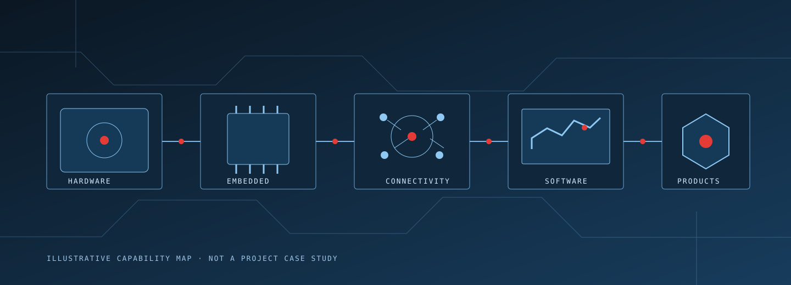

Hardware engineering
Electronics and device design for products, prototypes and intelligent physical systems.
- Electronics and circuit design
- PCB and sensor systems
- Power and device architecture
- Hardware prototyping
Engineering capabilities
Eneon brings together the disciplines needed to create useful technology—without forcing every project into the same process.

Electronics and device design for products, prototypes and intelligent physical systems.
Reliable firmware and control logic that makes a device behave as intended.
Connected devices and data flows that provide visibility beyond the device itself.
Purposeful applications and platforms that serve people, operations and devices.
Focused proof-of-concept work for testing a direction before committing further.
Cross-disciplinary development designed to carry an idea toward a real product.
The right starting point
Start with the outcome you need. We can help identify a practical first step, whether that is an architecture discussion, a prototype, a connected system or an application.
Discuss your idea